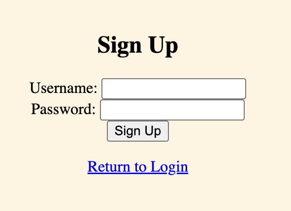
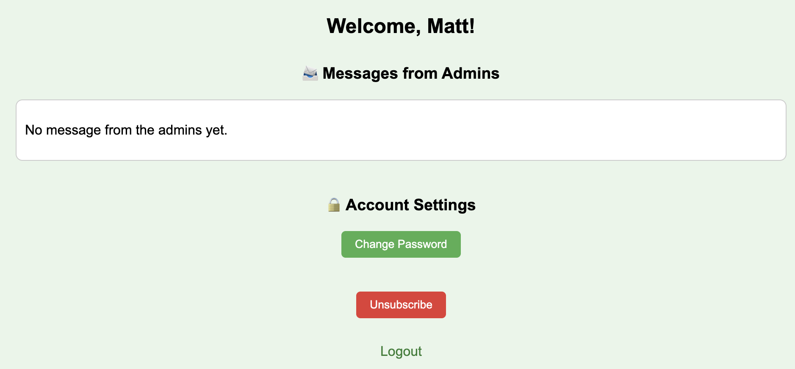
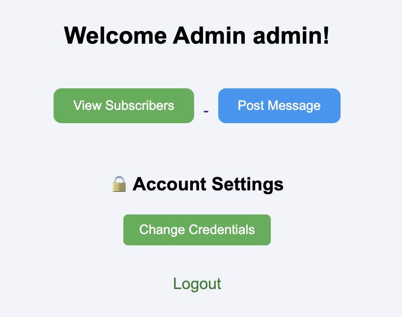
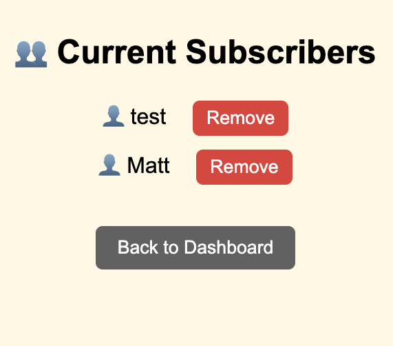
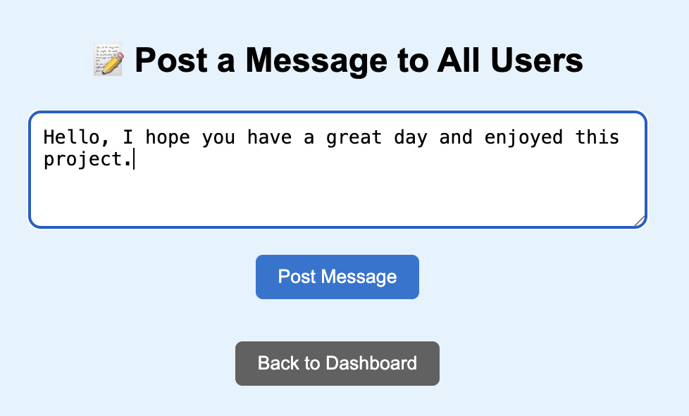
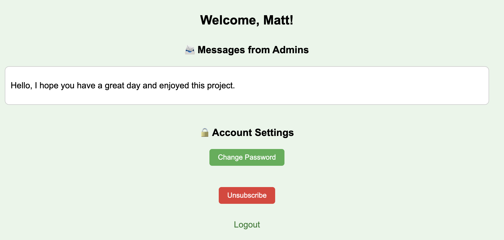
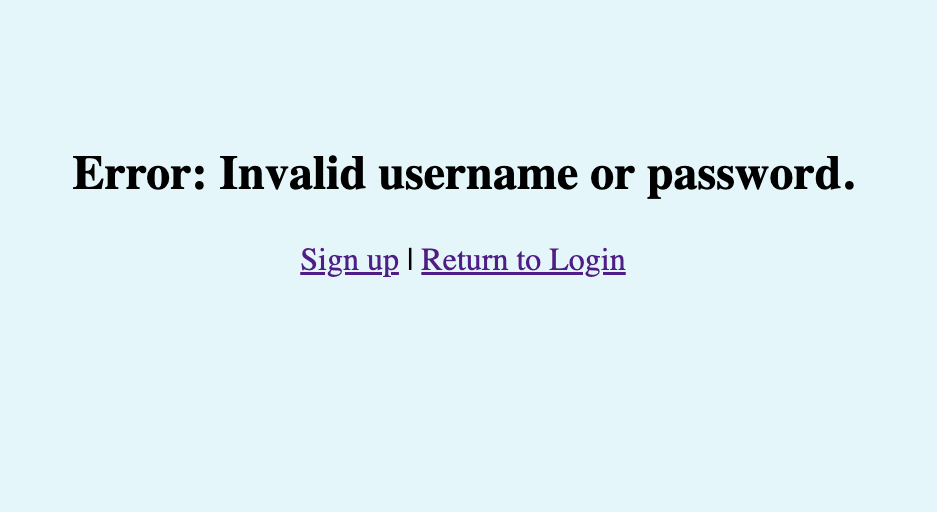

- Implemented a local Flask web application that simulates a Publish–Subscribe (Pub/Sub) system for a news board platform.
- Users can subscribe to receive updates and view news posts published by an administrator, demonstrating event-driven communication.
- Showcased the dynamic distribution of messages from publishers to subscribers in a local environment.
Technologies used: HTML, CSS, Python, Flask